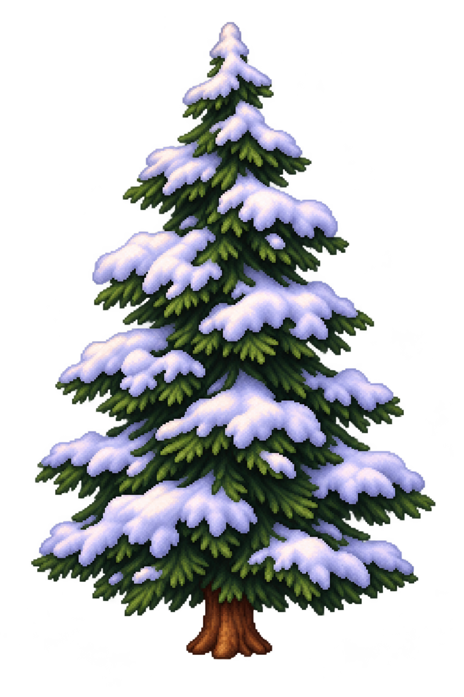
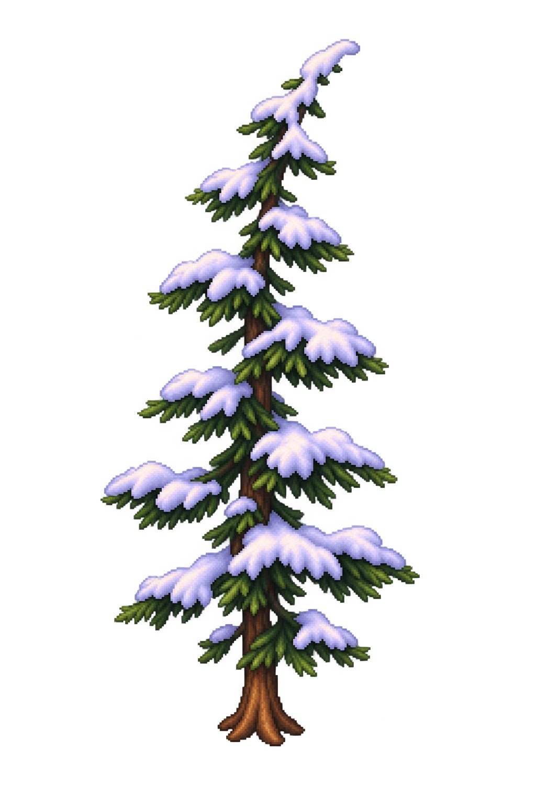
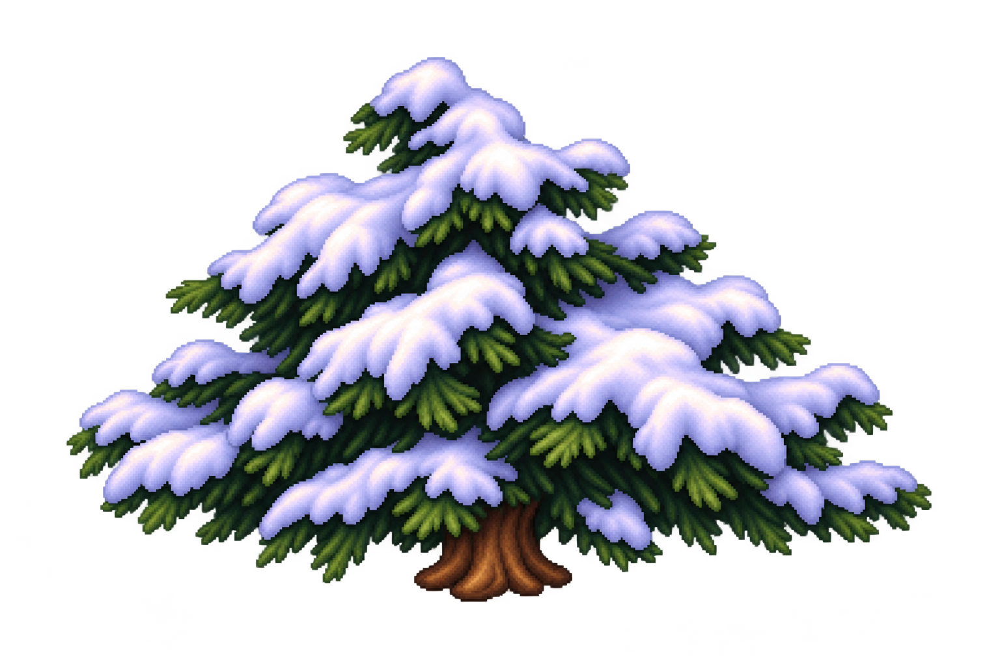
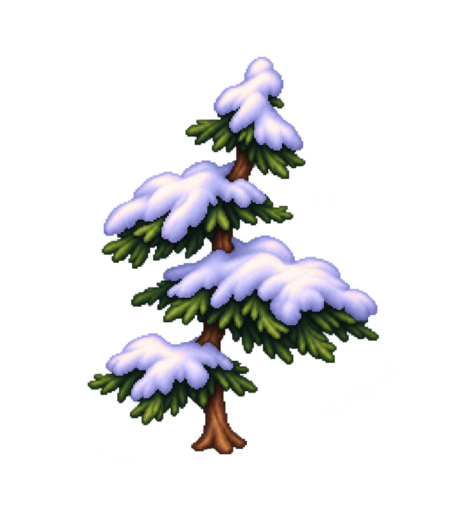
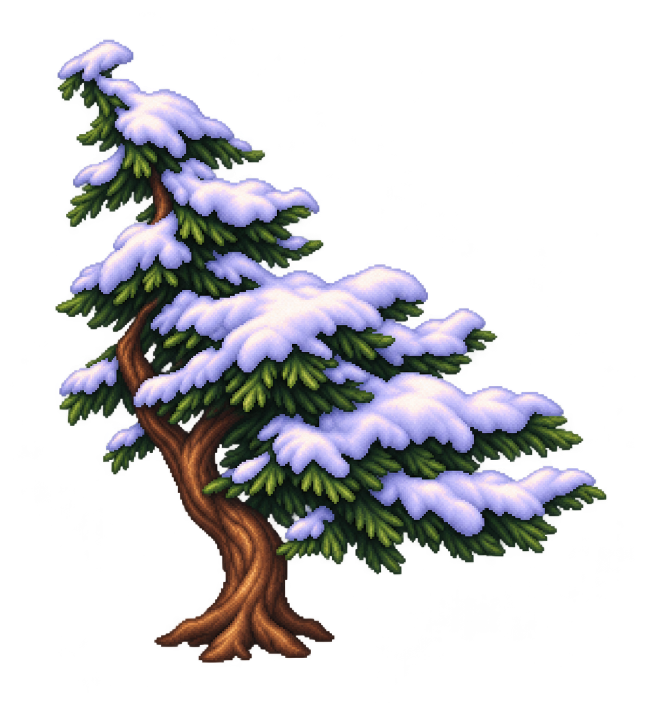
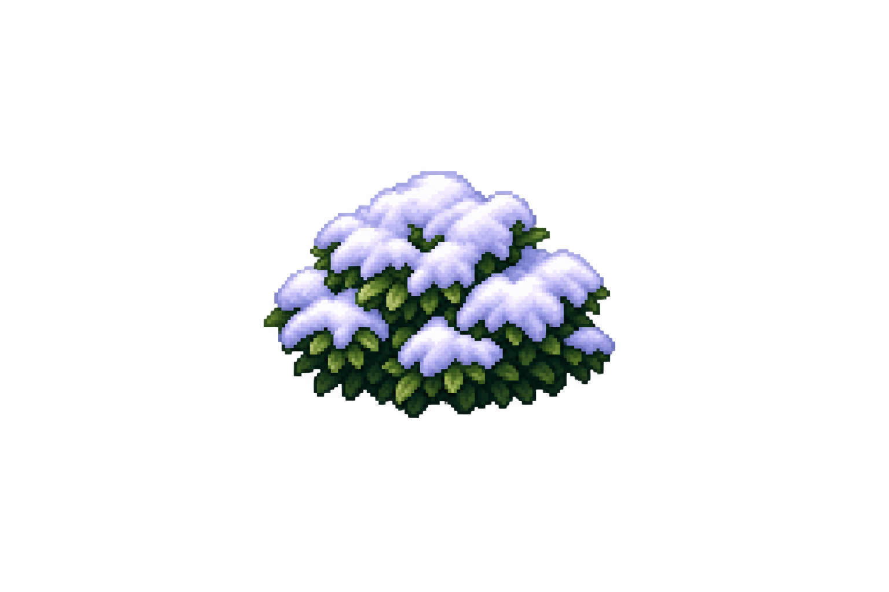
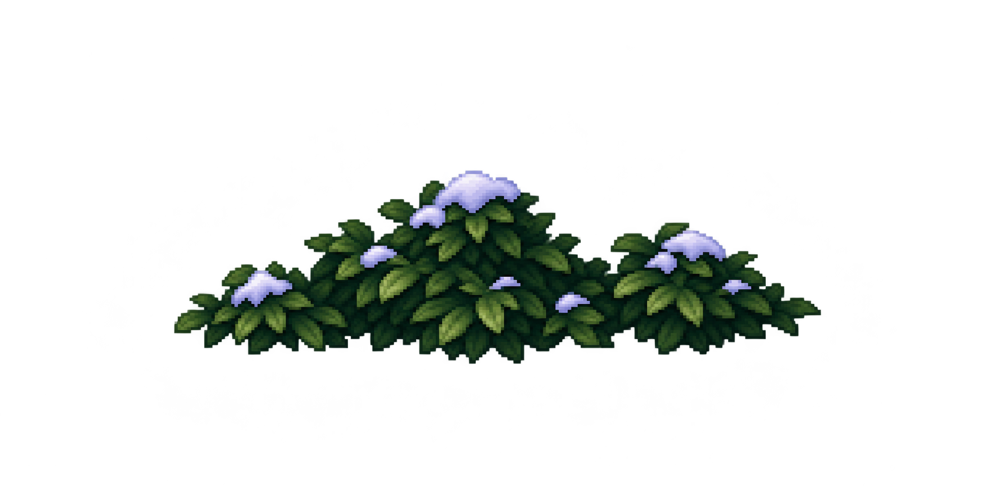
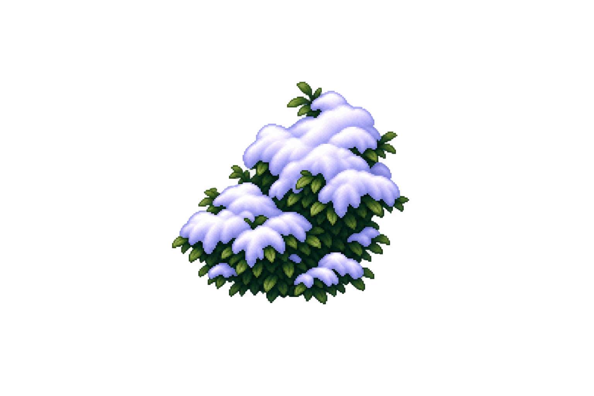
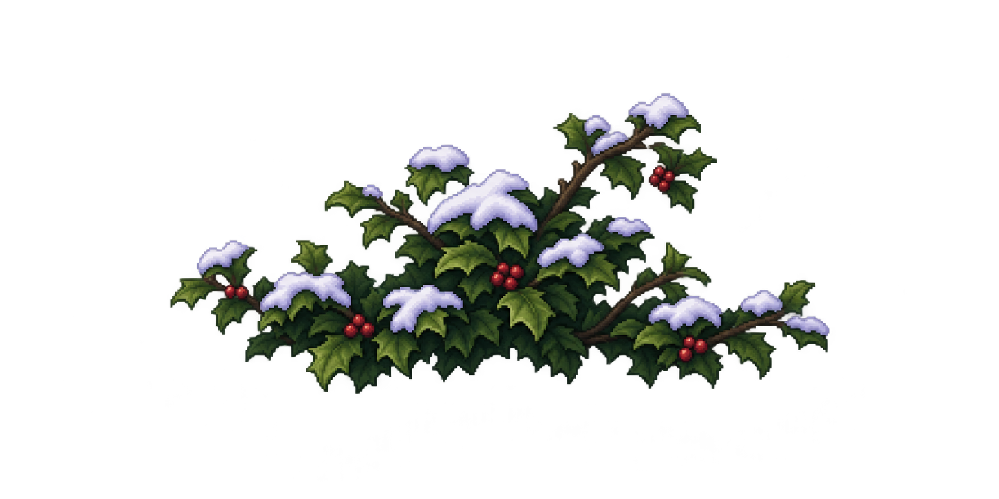

Étoilebois — végétation D.2.2
Cinq silhouettes de sapins et cinq formes d'arbustes. PNG isolés sur damier : les trois sprites D.2.1 sont conservés, sept nouvelles créations les complètent. Les échelles de cette présentation sont illustratives ; les captures du village montrent les proportions en jeu.
Sapins : classique, élancé, large, jeune, courbé

Classique · D.2.1

Élancé · D.2.2

Large · D.2.2

Jeune · D.2.2

Courbé · D.2.2
Arbustes : volumes, neige et baies

Arrondi enneigé · D.2.1
 Baies, neige épaisse · D.2.1
Baies, neige épaisse · D.2.1

Bas, neige légère · D.2.2

Double couronne · D.2.2

Baies, branches étalées · D.2.2
Les quatre nouveaux sapins sont des silhouettes dessinées distinctes. Les miroirs et variations d'échelle s'ajoutent à cette diversité. Aucun personnage, bâtiment ou sapin central n'est remplacé. Création avec imagegen intégré : prompts exacts dans D22-GENERATION.md.